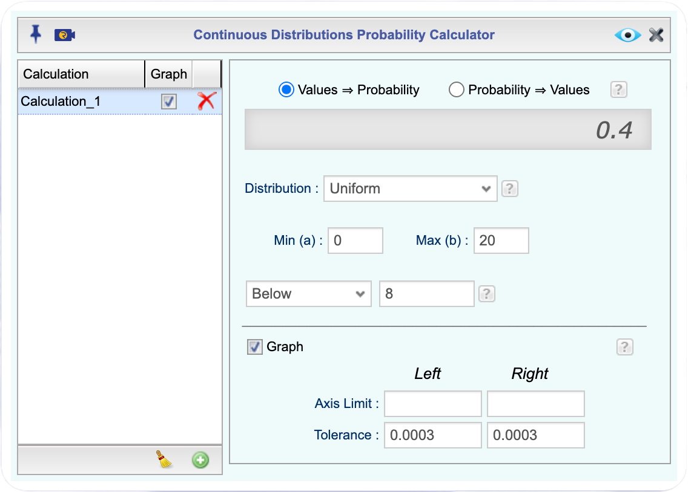
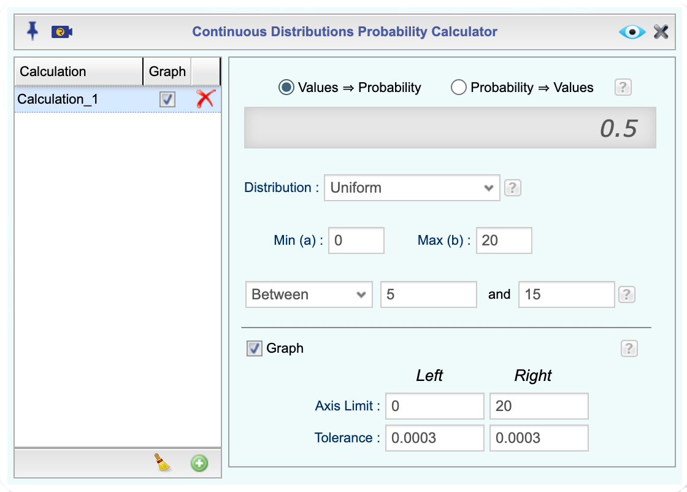
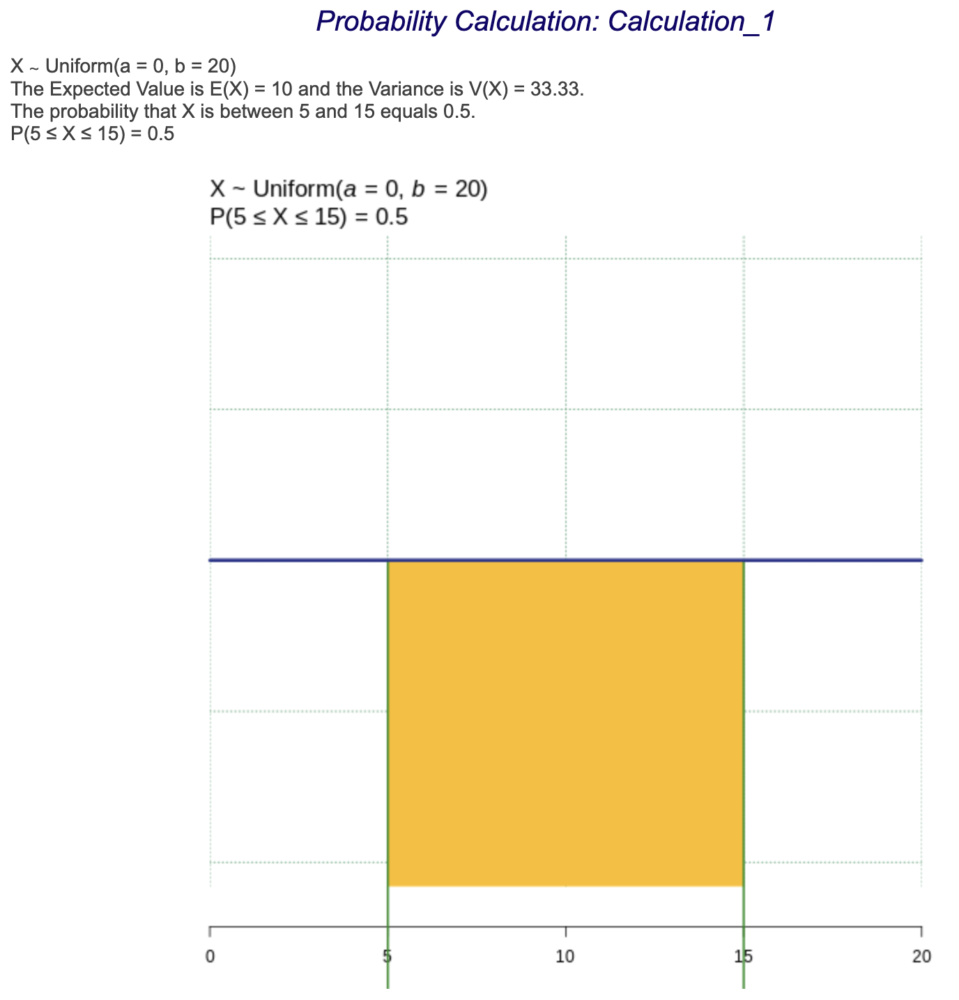

6 Continuous Probability Distribution
Chapter 6 Objectives
By the end of Chapter 6, you should be able to:
- Distinguish between discrete and continuous random variables and explain what makes a probability density function valid.
- Compute and interpret probabilities for a uniform distribution as areas of rectangles.
- Find and interpret probabilities and percentiles for normal distributions using the empirical rule, z-scores, and Rguroo.
- Assess whether a sample appears to come from a normally distributed population using visual tools.
Before you begin, review the process for importing a dataset. Click on the box below to expand the directions for importing a dataset into your Data Toolbox.
Importing Data to Rguroo
- Open the Data toolbox in Rguroo.
- From the Data Import dropdown, select Dataset Repository.
- In the top search box, type kozak, then select the Statistics Using Technology – Kozak repository.
- In the middle search box, type the first few letters of the dataset, and choose your dataset that appears in the lower panel.
- Click the . The dataset will be imported into your Rguroo account.
- Click the to close the dialog.
- To view the dataset, double-click the dataset under the Data toolbox list.
This chapter builds on the probability foundations established in earlier chapters by introducing continuous probability distributions — mathematical models used when a variable can take any value within a range rather than a list of separate counts. Continuous models are essential for describing measured quantities such as height, time, blood pressure, and test scores, and they lay the groundwork for every confidence interval and hypothesis test covered later in the course.
6.1 Continuous Random Variables and Probability Density Functions
6.1.1 From Discrete to Continuous
In previous chapters, you worked with discrete random variables — variables whose values you count, such as the number of heads in a coin flip experiment, or the number of accidents at an intersection in a week. A discrete variable can only take specific, separate values, and its probability distribution is typically displayed in a table.
A continuous random variable, by contrast, can take any value within an interval of real numbers. Continuous variables arise from measurement rather than counting. Examples include:
- The height of a randomly selected student (measured in inches)
- The time it takes to complete a statistics exam (measured in minutes)
- The amount of rainfall in a city during a given month (measured in millimeters)
- The blood pressure reading of a randomly selected adult
Because a continuous variable can theoretically take on infinitely many values within any interval, we cannot meaningfully assign probability to individual values the way we did with discrete distributions. That is to say, the probability of any individual value is zero. Instead, probability is represented by area under a curve.
This is one of the most important conceptual shifts in the course. Take a moment to make sure this makes sense before moving on. Think about measuring your height — there is no one exact value for your height because every measurement tool has some limit to its precision.
6.1.2 Probability Density Functions
A probability density function (pdf), written \(f(x)\), is an equation whose graph describes the distribution of a continuous random variable and is used to calculate probabilities of continuous random variables. Two rules must be satisfied for a function to be a valid probability density function:
- The height of the graph of the equation must be greater than or equal to 0 for all possible values of the random variable.
- The total area under the graph of the equation over all possible values of the random variable must equal 1.
The probability that the random variable \(X\) falls between two values \(a\) and \(b\) is the area under the density curve from \(a\) to \(b\):
\[ P(a \leq X \leq b) = \text{area under } f(x) \text{ from } a \text{ to } b \]
This relationship is easiest to see visually. Figure 6.1 shows a density curve \(f(x)\) with the region between two values, \(a\) and \(b\), shaded in blue. That shaded region is exactly the probability \(P(a\leq X \leq b)\): not an approximation of it, the area itself is the probability. This is what makes continuous probability fundamentally different from the discrete case. There is no single bar or point to read off; the entire shape of the curve between \(a\) and \(b\) contributes to the answer.
6.1.3 Classifying Variables
Before using any continuous distribution, confirm that the variable is indeed continuous by asking: is this variable measured or counted?
| Variable | Discrete or Continuous? | Reason |
|---|---|---|
| Number of customers in a store | Discrete | Counted |
| Time a customer spends shopping | Continuous | Measured |
| Number of credit hours enrolled | Discrete | Counted |
| Weight of a bag of apples | Continuous | Measured |
| Score on a multiple-choice exam (points) | Discrete | Counted |
Example 6.1 Classify each variable below as discrete or continuous.
a. The number of miles driven to school (rounded to the nearest mile)
b. The exact distance driven to school, in miles
c. The number of pages in a randomly selected library book
d. The weight of a randomly selected library book
6.1.4 Homework for Section 6.1
What is the difference between a discrete and a continuous random variable?
What is a probability density function?
Classify each variable below as discrete or continuous, and briefly explain your reasoning.
- The number of text messages sent by a student in one day
- The exact amount of time (in seconds) a student spends on a phone call
- The number of siblings a randomly selected student has
- The exact volume of coffee (in ounces) in a to-go cup
- The number of parking tickets issued on a college campus in a week
A statistics instructor tells the class that the amount of time students spend completing a quiz is a continuous random variable.
- What is the probability that a student takes exactly 14.0 minutes to complete the quiz?
- Rewrite the question in part (a) using an interval so that it is a meaningful probability question about quiz completion time.
6.2 The Uniform Distribution
The uniform distribution is the simplest continuous distribution and the best starting point for understanding how density curves work. In a uniform distribution, every value in an interval is equally likely in the sense that the density is constant across the entire interval. This makes the graph a horizontal rectangle, which means probability is simply area — length times width.
If a continuous random variable \(X\) is uniformly distributed on the interval \([a, b]\) we write \(X \sim U(a,b)\), then the probability density function is:
\[ f(x) = \frac{1}{b - a}, \quad \text{for } a \leq x \leq b. \]
The height of the rectangle is the constant \(\frac{1}{b-a}\), which ensures the total area equals 1:
\[ \text{Total area} = (b - a) \cdot \frac{1}{b - a} = 1. \]
Figure 6.2 shows the general shape of a uniform distribution on the interval \([a, b]\). The curve is a horizontal line at height \(f(x) = \frac{1}{b-a}\) across the entire interval, and it drops to 0 outside of \([a, b]\), indicating that values outside that range are impossible. The shaded rectangle represents the total probability, which equals the area of the rectangle — width, \((b-a)\), times height, \(\frac{1}{b-a}\) — confirming that the total area under the curve is exactly 1, as required for any valid probability density function.
![Density curve for a uniform distribution from a to b. The curve is a horizontal rectangle with constant height f(x) = 1/(b-a) across the entire interval [a, b], and zero outside that interval. The shaded region illustrates that all values are equally likely.](Continuous-Probability-Distribution_files/figure-html/fig-uniform-density-1.png)
For a uniform distribution on \([a, b]\), the mean and standard deviation are
\[ \mu = \frac{a + b}{2} \]
and
\[ \sigma = \frac{b-a}{\sqrt{12}} \]
The mean is the midpoint of the interval, and the standard deviation measures how spread out the values are across that interval.
Example 6.2 A city bus arrives at a particular stop every 20 minutes. If you arrive at the stop at a random time, your waiting time \(X\) is uniformly distributed on the interval \([0, 20]\) minutes.
a. Draw the density curve and confirm it is valid.
b. Find and interpret the probability that you wait less than 8 minutes.
c. Find and interpret the probability that you wait between 5 and 15 minutes.
d. Find and interpret the probability that you wait exactly 10 minutes.
🔎 Solution
- The height of the density curve is \(f(x) = \frac{1}{20-0} = \frac{1}{20} = 0.05\). The total area is \(20 \times 0.05 = 1\). The curve is a horizontal line at height 0.05 from \(x = 0\) to \(x = 20\).

- \(P(X < 8) = (8 - 0) \times 0.05 = 0.40\)
Finding Uniform Probabilities in Rguroo
- Open the Probability-Simulation toolbox in Rguroo.
- Open the Probability dropdown, hover over Probability Calculator, and select Continuous. This opens the Continuous Distributions Probability Calculator dialog.
- In the Continuous Discrete Distributions Probability Calculator dialog, select Uniform from the Distributions dropdown menu.
- Select Values \(\Rightarrow\) Probability, since we will be inputting values and we want the probability.
- Enter 0 for the Min (a) and 20 for the Max (b).
- Since we want the probability below 8, select Below in the dropdown menu. Then enter 8 in the next box.
- Click the preview icon to see the probability.
Click here to see the Rguroo dialog

There is a 40% chance you wait less than 8 minutes for the bus.
- \(P(5 \leq X \leq 15) = (15 - 5) \times 0.05 = 10 \times 0.05 = 0.50\).
Using the same continuous probability calculator in Rugroo with Uniform Distribution, enter 0 for the Min (a) and 20 for the Max (b). Since we want the probability between 5 and 15, select Between in the dropdown menu. Then enter 5 for the Lower tail… and 15 for the Upper tail… boxes as shown in the figure below.

Below is the graphical output from Rguroo if you select the graph checkbox.

There is a 50% chance you wait between 5 and 15 minutes for the bus.
- \(P(X = 10) = 0\). For any continuous random variable, the probability of any single exact value is zero.
Example 6.3 A particular smartphone model has a battery life that is approximately uniformly distributed between 8 and 14 hours.
State the random variable and identify the minimum (\(a\)) and maximum (\(b\)).
Find the mean and standard deviation of battery life.
Find the probability that a randomly selected phone lasts more than 11 hours.
Find the probability that a randomly selected phone lasts between 9 and 12 hours.
6.2.1 Homework for Section 6.2
The amount of time a student spends waiting in line at the college bookstore is uniformly distributed between 0 and 12 minutes.
- State the random variable.
- Find the probability a student waits fewer than 4 minutes.
- Find the probability a student waits between 3 and 9 minutes.
- Find the mean waiting time.
- Is it unusual to wait more than 11 minutes? Explain.
A vending machine dispenses between 11.5 oz and 12.5 oz of soda per cup, with a uniform distribution.
- Find the probability a cup contains more than 12 oz.
- Find the probability a cup contains between 11.8 and 12.2 oz.
- Find the mean and standard deviation of the amount dispensed.
The amount of time between calls to a customer service center is uniformly distributed from 1 to 6 minutes.
- What is the probability that the next call arrives within 2 minutes?
- What is the probability that the next call takes more than 4 minutes to arrive?
6.3 The Normal Distribution and the Standard Normal Distribution
6.3.1 Why the Normal Distribution Matters
The normal distribution is the most important continuous probability distribution in statistics. Many naturally occurring variables, such as heights of adult males, birth weights, IQ scores, blood pressure readings, and measurement errors, follow distributions that are approximately normal. More importantly, many statistical inference methods are based on normal distributions, so understanding the normal model is essential for the rest of the course.
A normal distribution is:
- Bell-shaped — symmetric about the center, with the curve rising steeply to its highest point directly above the mean. Moving away from the center, the curve falls sharply at first, then tapers more and more gradually toward the tails.
- Unimodal — has one peak
- Asymptotic — the tails approach but never touch the \(x-\)axis
- Completely described by exactly two parameters: the mean \(\mu\) and the standard deviation \(\sigma\)
We write \(X \sim N(\mu, \sigma)\) to mean “the random variable \(X\) follows a normal distribution with mean \(\mu\) and standard deviation \(\sigma\).”

Properties of the Normal Curve
Every normal distribution shares these properties:
- The curve is symmetric about the mean \(\mu\), so the mean, median, and mode are all equal.
- The highest point (the mode) on the curve is at \(x = \mu\).
- The curve changes from “hill-shaped” to “valley-shaped” (i.e., the inflection points occur) at exactly one standard deviation on either side of the mean: at \(\mu - \sigma\) and \(\mu + \sigma\).
- The total area under the curve equals 1.
- The area to the left of the mean equals 0.5 and the area to the right equals 0.5, by symmetry.
6.3.2 The Empirical Rule
The Empirical Rule (also called the 68-95-99.7 rule) gives approximate probability values for any normal distribution based on distance from the mean in standard deviations.
| Interval | Approximate Probability |
|---|---|
| Within 1 standard deviation of the mean: \(\mu \pm \sigma\) | About 68% |
| Within 2 standard deviations of the mean: \(\mu \pm 2 \sigma\) | About 95% |
| Within 3 standard deviations of the mean: \(\mu \pm 3 \sigma\) | About 99.7% |

The empirical rule is useful for quick estimates and for identifying unusual observations. Values that fall more than 2 standard deviations from the mean are unusual (they occur less than 5% of the time), and values more than 3 standard deviations away are very unusual.
Example 6.4 (Using the Empirical Rule) Heights of adult women in the United States are approximately normally distributed with a mean of 64 inches and a standard deviation of 2.8 inches.
a. Between what two heights do approximately 68% of women fall?
b. What percentage of women are taller than 69.6 inches?
c. A woman is 57.6 inches tall. Is her height unusual?
🔎 Solution
a. By the Empirical Rule, 68% of data points fall within 1 standard deviation: \[ 64 \pm 2.8 = (61.2, 66.8) \text{ inches} \]
About 68% of women are between 61.2 and 66.8 inches tall.
b. We want to find how many standard deviations 69.6 is away from the mean height of 64 inches. \[ \sigma = \dfrac{69.6-64}{2.8} = 2 \]
This means 69.6 is 2 standard deviations above the mean. From the Empirical Rule, about 95% of women are between \(69.6 + 2(2.8) = 58.4\) and 69.6 inches. Because the curve is symmetric, the remaining 5% is split equally between the two tails, so about \(\dfrac{5}{2}=2.5\%\) of women are taller than 69.6 inches.

c. We want to determine the number of standard deviations the value 57.6 is from the mean.
\[ \sigma = \dfrac{57.6-64}{2.8} = -2.29 \]
So 57.6 is between 2 and 3 standard deviations below the mean. This is an unusual height — fewer than 5% of women are this short or shorter.
6.3.3 The Standard Normal Distribution
The standard normal distribution provides a common reference distribution for comparing values from different normal distributions.
The standard normal distribution is the normal distribution with mean 0 and standard deviation 1. It is written \(Z \sim N(0, 1)\).
Any value \(x\) from a normal distribution with mean \(\mu\) and standard deviation \(\sigma\) can be converted to a z-score using:
\[ z = \frac{x - \mu}{\sigma} \]
The \(z-\) score tells you how many standard deviations the value \(x\) is above or below the mean. A \(z-\) score of 0 means the value equals the mean exactly, a positive \(z-\) score means the value is above the mean, and a negative \(z-\) score means the value is below the mean. The size of the \(z-\) score indicates how far the value is from the mean. For example, a \(z-\) score of 2 means the value is 2 standard deviations above the mean, while a \(z-\) score of −1.5 means the value is 1.5 standard deviations below it.
Example 6.5 (Comparing Scores from Different Distributions) Math SAT scores are approximately normally distributed with a mean of \(\mu = 520\) and a standard deviation of \(\sigma = 110\). ACT Composite scores are approximately normally distributed with a mean of \(\mu = 20.8\) and a standard deviation of \(\sigma = 5.8\).
Student A scores 680 on the SAT Math test. Student B scores 28 on the ACT Composite. Which student scored better relative to other test takers?
Example 6.6 (Length of Human Pregnancy) The length of a human pregnancy is approximately normally distributed with a mean of 272 days and a standard deviation of 9 days.
a. State the random variable.
b. Find the probability that a pregnancy lasts more than 280 days.
c. Find the probability that a pregnancy lasts less than 250 days.
d. Find the probability that a pregnancy lasts between 265 and 280 days.
e. Find the length that only 10% of pregnancies are shorter than.
The examples that follow show how to find probabilities associated with a normal distribution two ways: by standardizing and using the standard normal distribution, and directly using Rguroo.
Technology, including Rguroo, can find exact probabilities for any normal distribution. The general steps are:
- Identify the random variable and write it in words: “Let \(X=\)…”
- State the distribution: \(X \sim N(\mu, \sigma)\)
- Translate the question into a probability statement: e.g., \(P(X > 280)\)
- Sketch a normal curve, shade the region, and estimate the probability.
- Use technology to find the exact probability.
- Interpret the result in context.
Example 6.7 (Mathematics SAT Scores) The mean mathematics SAT score is 514 with a standard deviation of 117. Assume the mathematics SAT score is approximately normally distributed.
a. State the random variable and its distribution.
b. Find the probability that a randomly selected person has a score above 700.
c. Find the probability that a person has a score below 400.
d. Find the score that represents the top 1% of all scores.
6.3.4 Homework for Section 6.3
A college offers two placement exams: a Math Placement Exam with a mean score of 68 and a standard deviation of 9, and an English Placement Exam with a mean score of 74 and a standard deviation of 6. Both exams are approximately normally distributed.
- A student scores 82 on the Math Placement Exam. Find the z-score for this score.
- The same student scores 83 on the English Placement Exam. Find the z-score for this score.
- Relative to other test-takers, on which exam did the student perform better? Explain using the z-scores from parts (a) and (b).
The heights of adult women are approximately normally distributed with a mean of 64 inches and a standard deviation of 2.8 inches. The heights of adult men are approximately normally distributed with a mean of 69 inches and a standard deviation of 3.0 inches.
- Find the \(z\)-score for a woman who is 70 inches tall.
- Find the \(z\)-score for a man who is 75 inches tall.
- Which person is relatively taller compared to their own sex — the 70-inch woman or the 75-inch man? Justify your answer using \(z\)-scores.
- Would either height be considered unusual? Explain using the value of the \(z\)-score.
A car’s fuel efficiency is measured in miles per gallon (mpg). For a particular model of sedan, fuel efficiency is normally distributed with a mean of 32 mpg and a standard deviation of 4 mpg. For a particular model of SUV, fuel efficiency is normally distributed with a mean of 24 mpg and a standard deviation of 3 mpg.
- Convert a sedan fuel efficiency of 28 mpg to a \(z\)-score.
- Convert an SUV fuel efficiency of 21 mpg to a \(z\)-score.
- Which vehicle has a fuel efficiency that is more unusual (farther from its own mean), the sedan at 28 mpg or the SUV at 21 mpg? Explain your reasoning.
- If a sedan has a \(z\)-score of \(−2.5\), find its fuel efficiency in mpg.
- Convert an SUV fuel efficiency of 21 mpg to a \(z\)-score.
- Which vehicle has a fuel efficiency that is more unusual (farther from its own mean), the sedan at 28 mpg or the SUV at 21 mpg? Explain your reasoning.
- If a sedan has a \(z\)-score of \(−2.5\), find its fuel efficiency in mpg.
The amount of time a student spends waiting in line at the college bookstore is normally distributed with a mean of 6 minutes and a standard deviation of 2 minutes.
- State the random variable and its distribution
- Find the probability a student waits more than 8 minutes.
- Find the probability a student waits less than 3 minutes.
- Find the probability a student waits between 4 and 7 minutes.
- Find the 95th percentile of waiting times. Interpret this value in the context of the problem.
The amount of time between calls to a customer service center is normally distributed with a mean of 3 minutes and a standard deviation of 1 minute.
- State the random variable and its distribution
- Find the probability that the next call arrives within 2 minutes.
- Find the probability that the next call takes more than 4 minutes to arrive.
- Find the time that only 10% of calls take longer than.
The amount of time a student spends studying for a statistics exam is normally distributed with a mean of 12 hours and a standard deviation of 3 hours.
- State the random variable and its distribution
- Find the probability a student studies more than 15 hours.
- Find the probability a student studies less than 8 hours.
- Find the probability a student studies between 10 and 14 hours.
- Find the number of hours that only 5% of students study more than.
The mean starting salary for nurses nationally is approximately \(\$67,000\) with a standard deviation of about \(\$10,000\). Assume starting salary is normally distributed.
- State the random variable and its distribution
- Find the probability a randomly selected new nurse earns more than \(\$80,000\).
- Find the probability a new nurse earns less than \(\$55,000\).
- What salary marks the bottom 5% of starting salaries?
6.4 Assessing Normality
Many statistical inference procedures such as confidence intervals, hypothesis tests, and others covered in later chapters assume that the data come from a population that is approximately normally distributed. Before applying these methods, it is good practice to check whether a normal model is reasonable.
For small samples, this check is mainly visual and contextual. No sample will be perfectly normal, so the goal is not to prove normality but to decide whether serious departures from normality would make the normal model unreasonable.
6.4.1 Tools for Assessing Normality
Two main visual tools are used:
1. Histogram or Density Plot
Look for a distribution that is:
- Roughly symmetric (not strongly skewed to the left or right)
- Unimodal (one peak, not two or more humps)
- Approximately bell-shaped
- Free from extreme outliers
A histogram, as shown in Figure 6.14, that is strongly right-skewed, left-skewed, bimodal, or heavily influenced by extreme values suggests the data may not come from a normal distribution.
![Four histograms arranged in a two by two grid. The top left histogram is roughly symmetric and bell-shaped with a single peak, consistent with a normal distribution. The top right histogram is strongly right-skewed, with a tall bar on the left and a long tail extending to the right. The bottom left histogram is bimodal, showing two distinct peaks separated by a dip. The bottom right histogram is roughly bell-shaped in the main body but has a small cluster of extreme values far to the right, representing outliers.](Continuous-Probability-Distribution_files/figure-html/fig-histogram-shapes-1.png)
2. Normal Quantile Plot (Normal Probability Plot)
A normal quantile plot (also called a Q-Q plot) compares the actual data values against the values we would expect if the data were perfectly normal. If the data follow a normal distribution, the points will fall close to a straight line. Departures from that line — especially S-shaped curves, strong bends, or systematic patterns — suggest the data are not well-described by a normal model. ?fig-qq-comparison illustrates three common patterns you may encounter: data that closely follow the reference line, data that curve away from the line in an S-shape, and data that mostly follow the line but contain one or two points that break away from it.
Guidelines for interpretation:
- Points close to a line → consistent with normality
- Strong curve or S-shape → not consistent with normality
- One or two points far from the line → possible outliers worth investigating
![Four normal probability plots with confidence bounds. The normal sample tracks the diagonal reference line closely from end to end, staying within the bounds. The exponential sample curves noticeably away from the line, with several large values rising above the upper bound, reflecting right skew. The Student t sample with four degrees of freedom follows the line closely through the middle but exits the bounds at both tails, reflecting heavy but symmetric tails. The Cauchy sample deviates sharply from the line almost everywhere, with several extreme values far outside the bounds in both directions, reflecting very heavy tails.](Rguroo_outputs/Continuous_Probability/qq_normal_sample.png)
![Four normal probability plots with confidence bounds. The normal sample tracks the diagonal reference line closely from end to end, staying within the bounds. The exponential sample curves noticeably away from the line, with several large values rising above the upper bound, reflecting right skew. The Student t sample with four degrees of freedom follows the line closely through the middle but exits the bounds at both tails, reflecting heavy but symmetric tails. The Cauchy sample deviates sharply from the line almost everywhere, with several extreme values far outside the bounds in both directions, reflecting very heavy tails.](Rguroo_outputs/Continuous_Probability/qq_exponential_sample.png)
![Four normal probability plots with confidence bounds. The normal sample tracks the diagonal reference line closely from end to end, staying within the bounds. The exponential sample curves noticeably away from the line, with several large values rising above the upper bound, reflecting right skew. The Student t sample with four degrees of freedom follows the line closely through the middle but exits the bounds at both tails, reflecting heavy but symmetric tails. The Cauchy sample deviates sharply from the line almost everywhere, with several extreme values far outside the bounds in both directions, reflecting very heavy tails.](Rguroo_outputs/Continuous_Probability/qq_student_t_sample.png)
![Four normal probability plots with confidence bounds. The normal sample tracks the diagonal reference line closely from end to end, staying within the bounds. The exponential sample curves noticeably away from the line, with several large values rising above the upper bound, reflecting right skew. The Student t sample with four degrees of freedom follows the line closely through the middle but exits the bounds at both tails, reflecting heavy but symmetric tails. The Cauchy sample deviates sharply from the line almost everywhere, with several extreme values far outside the bounds in both directions, reflecting very heavy tails.](Rguroo_outputs/Continuous_Probability/qq_cauchy_sample.png)
You will see applications of normal quantile plots in the later chapters, but for now, the main idea is that a straight line indicates the data are consistent with a normal distribution.
Example 6.8 (Kiama Blowhole Eruption Times) The dataset Blowhole_eruptions contains times (in seconds) between eruptions of a blowhole on the coast of Australia. The data in Table 6.1 are times in seconds between eruptions (“Kiama blowhole eruptions,” 2013). A complete description of the variables is provided in the dataset code book that follows.
- State the random variable
- Draw a density plot overlay of a histogram of the data.
- Draw the normal quantile plot.
- Do the data come from a population that is normally distributed?
 The dataset for this example is available in the Rguroo dataset repository Kozak, with the dataset name Blowhole_eruptions.
The dataset for this example is available in the Rguroo dataset repository Kozak, with the dataset name Blowhole_eruptions.
| Interval |
|---|
| 83 |
| 51 |
| 87 |
| 60 |
| 28 |
| 95 |
Code book for Class Blowhole_eruptions Dataset
Description The ocean swell produces spectacular eruptions of water through a hole in the cliff at Kiama, about 120km south of Sydney, known as the Blowhole. The times at which 65 successive eruptions occurred from 1340 hours on 12 July 1998 were observed using a digital watch.
Format
This data frame contains the following columns:
Interval: Waiting time between eruptions (seconds)
Source Kiama Blowhole Eruptions. (n.d.). Retrieved from http://www.statsci.org/data/oz/kiama.html
References The data was collected and contributed by Jim Irish, Faculty of Engineering, University of Technology, Sydney.
Example 6.9 (Cholesterol Data) The dataset cholesterol was collected on patients four days after having a heart attack. The data is in Table 9.12.
- Create a density plot overlay of the histogram of the day 4 cholesterol values and describe the shape.
- Create a normal probability plot. Do the points fall close to a line?
- Based on the two plots, does it appear that day 4 cholesterol levels are approximately normally distributed? Explain your reasoning.
6.4.2 Homework for Section 6.4
- The size of fish is very important to commercial fishing. A study conducted in 2012 collected the lengths of Atlantic cod caught in nets in Karlskrona (Ovegard, Berndt & Lunneryd, 2012). Data based on information from the study is in Table 6.2. Determine if the data is from a population that is normally distributed.
 The dataset for this exercise is available in the Rguroo dataset repository Kozak, with the dataset name Cod.
The dataset for this exercise is available in the Rguroo dataset repository Kozak, with the dataset name Cod.
| length |
|---|
| 48 |
| 50 |
| 50 |
| 55 |
| 53 |
| 50 |
- The WHO MONICA Project collected blood pressure data for people in China (Kuulasmaa, Hense & Tolonen, 1998). Data based on information from the study is in Table 6.3. Determine if the data is from a population that is normally distributed.
 The dataset for this exercise is available in the Rguroo dataset repository Kozak, with the dataset name BP.
The dataset for this exercise is available in the Rguroo dataset repository Kozak, with the dataset name BP.
| pressure |
|---|
| 114 |
| 141 |
| 154 |
| 137 |
| 131 |
| 132 |
- Annual rainfalls for Sydney, Australia are given in Table 6.4 (“Annual maximums of,” 2013). Can you assume rainfall is normally distributed?
 The dataset for this exercise is available in the Rguroo dataset repository Kozak, with the dataset name Annual.
The dataset for this exercise is available in the Rguroo dataset repository Kozak, with the dataset name Annual.
| amount |
|---|
| 146.8 |
| 383.0 |
| 90.9 |
| 178.1 |
| 267.5 |
| 95.5 |